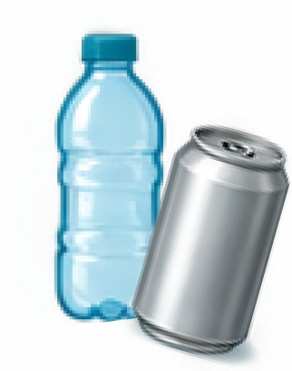

- Prepare
- Insert
- Redeem
Insert Your Recyclable
Please insert one item at a time.

Waiting for Item...
You have 0 points
Redeem a reward now, or keep inserting.
Please insert one item at a time.

Waiting for Item...
You have 0 points
Redeem a reward now, or keep inserting.